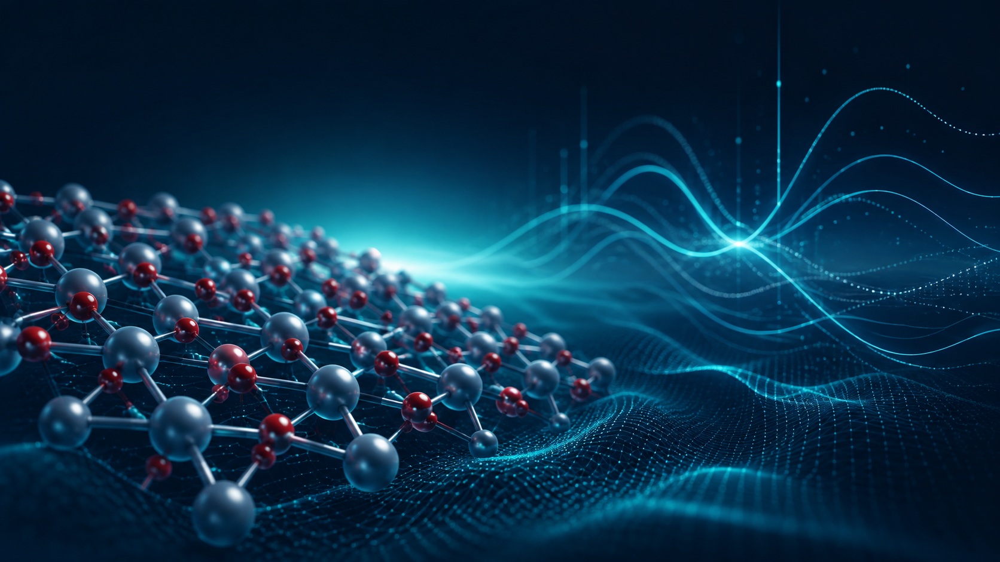

01
Electrochemical Energy Storage
Batteries, metal-air systems, supercapacitors, electrode design, interfaces, and electrochemical performance evaluation.
Senior Postdoctoral Researcher
Electrochemistry • Energy Storage • DFT
I work at the intersection of electrochemistry, energy-storage materials, electrocatalysis, and computational materials science. My research combines experimental electrochemical characterization with density functional theory to understand and engineer functional materials for advanced energy technologies.
Research
My work spans experimental electrochemistry and atomistic modelling, with emphasis on materials design, reaction mechanisms, and performance optimization.
Batteries, metal-air systems, supercapacitors, electrode design, interfaces, and electrochemical performance evaluation.
Electrocatalytic materials, reaction engineering, active-site design, and hydrogen-related energy conversion processes.
Adsorption, electronic structure, catalytic active sites, charge transfer, DOS/PDOS, and structure–property relationships.
Computational Portfolio
This section will become the visual core of the website. Each project will show the model, computational question, key structures, electronic analysis, and the main scientific conclusion.

Surface Electronic Structure · DFT–Experiment Correlation
First-principles DFT reveals why the SnO₂ (310) surface provides the most favorable electronic transport pathway in highly annealed interdigitated supercapacitor electrodes.
Catalytic Active Sites
Comparative active-site modelling, reaction energetics and structure–activity interpretation.
Next step: add figuresElectronic Structure
DOS/PDOS, band structure, charge-density analysis and atomistic interpretation.
Next step: add figuresResearch Outputs
Recent publications, manuscripts under review, and international conference presentations in electrochemical energy storage, electrocatalysis, advanced carbon materials, and computational materials.
Hamed Pourzolfaghar, X. Y. Jiang, J. Q. Liao, S. L. Hsieh, Y. J. Wang, B. S. Pan, Y. Y. Li
Batteries & Supercaps, 9(7), e70381C. P. Liao, C. H. Wang, Hamed Pourzolfaghar, S. M. Yang, Y. Y. Li
Advanced Functional MaterialsG. A. Tafete, Hamed Pourzolfaghar, Y. Y. Li, N. G. Habtu
Synthetic Metals, 118211I-Hsuan Tseng, Shu-Heng Lin, Hamed Pourzolfaghar, Rong-Feng Lin, Yuan-Yao Li
Accepted Chemical Engineering JournalHamed Pourzolfaghar, Y. C. Chen, A. K. Dalan, R. K. Hosseini, C. P. Liao, S. Hosseini, Y. Y. Li
Journal of Energy Storage, 151, 120250P. Jayaraman, Hamed Pourzolfaghar, Y. Y. Li, H. A. Therese
Nanoscale, 18(4), 2239–2251Reza Khadem Hosseini, Alireza Babaei, Cyrus Zamani, Hamed Pourzolfaghar, Yuan-Yao Li
Accepted Journal of Power SourcesHamed Pourzolfaghar, Chen-Hui Han, Zufar Amaanaturraafi, Yuan-Yao Li
Submitted Electrochimica ActaJia-Qing Liao, Sheng-Lin Hsieh, Yong-Jie Wang, Bing-Sen Pan, Hamed Pourzolfaghar, Yuan-Yao Li
Submitted Journal of Alloys and CompoundsSong-Jeng Huang, Naser Einollahi, Farsana Mampulliyalil, Hamed Pourzolfaghar, Sathiyalingam Kannaiyan
Submitted Journal of Power SourcesS. Chellamuthu, Hamed Pourzolfaghar, S. Palanisamy, Y. Haldorai, C. A. Antonyraj, Y. Y. Li
Under Review Energy Storage MaterialsK. Prabhakaran, Hamed Pourzolfaghar, Y. Y. Li, N. Priyadharsini
Under Review Journal of Power SourcesC.-H. Wang, S.-M. Yang, Hamed Pourzolfaghar, H.-H. Wu, Y.-Y. Li
Under Review Advanced Functional MaterialsAntwerp, Belgium
From Ion Transport to Electron-Dominant Kinetics: Rethinking the Fundamentals of Electrochemical Energy Storage
Poster PresentationChung Yuan Christian University · Taoyuan City, Taiwan
Molten-KCl-Assisted Particle Growth: Effects on Na⁺ Transport and Electrochemical Performance of P2-Na₂/₃Ni₁/₃Mn₂/₃O₂ Cathodes for Sodium-Ion Batteries
Conference PresentationContact
For research collaboration, scientific discussion, or professional opportunities, feel free to get in touch.